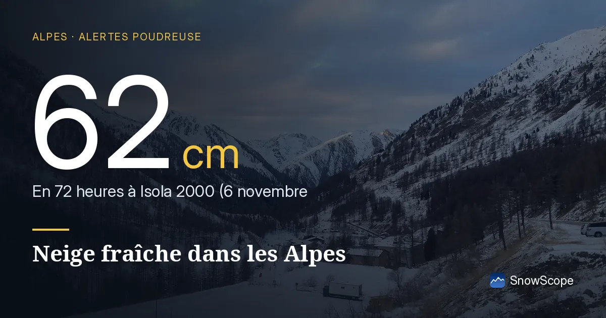
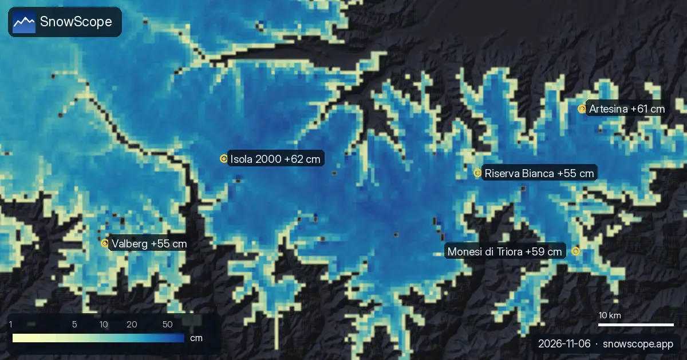

Neige fraîche dans les Alpes : 62 cm en 72 heures à Isola 2000 (6 novembre)
Trois jours de tempêtes ont apporté 55 à 62 cm de neige fraîche dans les Alpes du Sud. Isola 2000, Artesina, Monesi di Triora et Riserva Bianca ont connu les plus fortes chutes, avec de la poudre encore fraîche sur les hauts versants malgré un manteau léger en début de saison.
Consultez les prévisions neige en temps réel pour Isola 2000 sur l'application SnowScopeHauteurs de neige, alertes poudreuse et carte 3D, gratuitement.
Quelles stations ont reçu le plus de neige
Isola 2000 a dominé la région avec 62 cm en trois jours. Artesina et Monesi di Triora suivaient de près avec 61 cm et 59 cm. Valberg et Riserva Bianca ont aussi reçu des chutes importantes de 55 cm chacune. Vendredi 6 novembre a apporté moins de neige partout : 7 à 8 cm en 24 heures alors que le système se déplaçait.
Vendredi matin, 725 stations sur 1 178 dans les Alpes avaient de la neige sur leurs hauts versants. La région comptait 39 100 km² de couverture neigeuse, en baisse par rapport aux 47 470 km² deux jours plus tôt alors que les basses altitudes fondaient.
| Station | Hauteur de neige | Neige fraîche, 72 h | Attendu, jours suivants | Sommet |
|---|---|---|---|---|
| Isola 2000 | 19 cm | 62 cm | 3 cm | 2 601 m |
| Artesina | 21 cm | 61 cm | 1 cm | 2 091 m |
| Monesi di Triora | 16 cm | 59 cm | 1 cm | 2 157 m |
| Valberg | 10 cm | 55 cm | 0 cm | 2 012 m |
| Riserva Bianca | 21 cm | 55 cm | 2 cm | 2 054 m |

Épaisseur de neige par altitude : où la poudreuse dure le plus longtemps
Les hauts versants gardent la meilleure neige. À Isola 2000, le sommet à 2 601 m a 17 cm, la mi-station en a 15 cm, et la base 12 cm. C'est pareil à Artesina : seul le sommet (2 091 m) garde un manteau utile de 16 cm, tandis que la mi-station (1 446 m) n'a que 1 cm et la base (801 m) est à nu.
La neige de début de saison est mince selon les normes hivernales. Monesi di Triora, à 2 157 m, a 15 cm au sommet mais tombe à 6 cm à 1 764 m. C'est pourquoi l'altitude compte le plus en novembre : chaque 100 m de descente réduit l'épaisseur et la stabilité.

Vérité terrain : ce que les stations ont mesuré
Plattkopf à 2 220 m a enregistré 30 cm de neige au sol le 2 novembre, avec 8 cm tombés en 24 heures. Schönbüel à 1 777 m avait 14 cm total et 11 cm de chute fraîche. Feuerkogel, plus bas à 1 618 m, n'a mesuré que 9 cm le 1er novembre.
Ces valeurs de station reflètent le même système de tempête qui a frappé les stations. La correspondance entre stations et estimations est proche en altitude ; tous deux confirment que la neige est la plus épaisse au-dessus de 2 000 m et s'amincit rapidement en dessous de 1 700 m.
Neige mouillée et niveaux de gel à venir
Le niveau de gel — l'altitude où la neige se transforme en pluie — monte au cours de la semaine. Le 6 novembre, il culmine à 2 350 m ; le 9 novembre, il monte à 2 590 m à Isola 2000. Cela signifie que les hauts versants restent secs et froids, mais la mi-station et les pistes basses risquent une neige mouillée et lourde si de la pluie les atteint.
À Artesina, le niveau de gel atteint 2 750 m le 8 novembre, au-dessus du sommet de la station qui est à 2 091 m. S'il y a de la pluie, elle frappe même les hauts versants. Riserva Bianca fait face au même risque. Après un gel la nuit, ces versants deviennent verglacés ; les premières traces le matin sont faciles à skier, mais le soleil d'après-midi sur une neige devenue verglacée est piégeux.
Quoi de neuf : la semaine en prévision
Plus de neige est prévue mais légère. Isola 2000 en attend 3 cm d'ici le 9 novembre, Riserva Bianca 2 cm, Artesina et Monesi di Triora environ 1 cm chacune. Vendredi à dimanche apportent peu ou pas de chute fraîche dans la plupart des stations. C'est le moment de skier la nouvelle poudreuse avant qu'elle se tasse et durcisse.
La tendance se calme ensuite. Le 9 novembre, la tempête principale a passé. Les prévisions quelques jours à l'avance changent souvent : consultez la carte de nouveau le matin où vous prévoyez de voyager pour voir les changements de dernière minute.
Neige de début de saison : ce qu'il faut surveiller
La neige de novembre est mince et repose souvent sur de la roche nue. Les 19 cm de moyenne sur les hauts versants d'Isola 2000 sont bien au-dessus des 1 cm habituels pour cette époque — un rappel que c'était une tempête inhabituellement humide — mais c'est quand même un manteau modeste. Les rochers peuvent se cacher sous une neige peu épaisse ; marchez avec prudence sur les crêtes exposées.
Le vent accumule la poudreuse dans les ravins et creux des versants sous le vent tandis que le côté au vent est dégarnit. Les versants exposés au nord gardent le froid et l'ombre et conservent la poudreuse plus gonflée plus longtemps que les faces sud, qui reçoivent le soleil et s'affaissent avant midi. Planifiez votre choix de piste selon l'heure du jour et l'orientation du versant pour suivre les premières traces le plus longtemps.
Conseils aux skieurs
- Skiez en altitude : les hauts versants (au-dessus de 2 200 m) gardent la neige la plus épaisse et la plus durable. Le terrain plus bas est mince et peut découvrir la roche.
- Partez tôt : la poudreuse est meilleure les premières heures après l'arrêt de la neige, avant que le soleil ne l'affaiblisse et que la foule ne la trace.
- Choisissez les versants exposés au nord le matin et l'après-midi, et les faces sud en début de matin avant que le soleil ne les ramollisse.
- Avant de skier hors-piste ou de faire du ski de randonnée, consultez le bulletin d'avalanche officiel de votre région. La neige fraîche sur les versants raides augmente le risque d'avalanche les premiers jours.
- Activez une alerte poudreuse dans l'app SnowScope : elle vous dit quand Isola 2000, Artesina et d'autres stations reçoivent de la neige fraîche, pour que vous puissiez préparer votre voyage à temps.
À propos de ces chiffres
Les hauteurs de neige des stations sont la neige la plus épaisse sur le haut du domaine à la date indiquée ; ce sont des estimations pour une zone, pas une mesure en un point. Les prévisions peuvent changer. Consultez toujours le bulletin d'avalanche officiel avant le hors-piste.
Bulletins d'avalanche officiels: EAWS (Alps)
Citer ce bulletin
Pour la recherche, l'enseignement ou la presse : chiffres et graphiques réutilisables librement sous CC BY 4.0 avec cette citation.
SnowScope (2026), Neige fraîche dans les Alpes : 62 cm en 72 heures à Isola 2000 (6 novembre), https://snowscope.app/blog/fr/2026/11/alps-fresh-snow-powder-alert-6-november-2026.html, consulté le 2026-11-06
SnowScope (Atlas Labs). (2026, November 6). Neige fraîche dans les Alpes : 62 cm en 72 heures à Isola 2000 (6 novembre). SnowScope snow reports. https://snowscope.app/blog/fr/2026/11/alps-fresh-snow-powder-alert-6-november-2026.html
BibTeX
@misc{snowscope2026alpsfreshsnowpowderalert,
author = {{SnowScope (Atlas Labs)}},
title = {Neige fraîche dans les Alpes : 62 cm en 72 heures à Isola 2000 (6 novembre)},
year = {2026},
month = nov,
howpublished = {\url{https://snowscope.app/blog/fr/2026/11/alps-fresh-snow-powder-alert-6-november-2026.html}},
note = {Published 2026-11-06 10:16 UTC; accessed 2026-11-06}
}· CC BY 4.0 · Méthodes, données et outils →
Isola 2000 : neige et température selon l'altitude, cet hiver vs l'hiver dernier (outils) →
Suivre Isola 2000
Gratuit : un message quand la neige arrive, et la météo chaque matin.